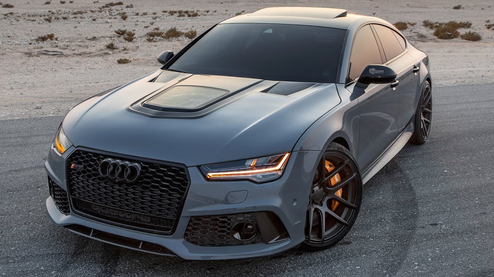

- CARS:
- -A car (or automobile) is a wheeled motor vehicle used for transportation. Most definitions of cars say that they run primarily on roads, seat one to eight people, have four wheels, and mainly transport people rather than goods.[2][3] Cars came into global use during the 20th century, and developed economies depend on them. The year 1886 is regarded as the birth year of the modern car when German inventor Karl Benz patented his Benz Patent-Motorwagen. Cars became widely available in the early 20th century. One of the first cars accessible to the masses was the 1908 Model T, an American car manufactured by the Ford Motor Company. Cars were rapidly adopted in the US, where they replaced animal-drawn carriages and carts, but took much longer to be accepted in Western Europe and other parts of the world.[citation needed]Cars have controls for driving, parking, passenger comfort, and a variety of lights. Over the decades, additional features and controls have been added to vehicles, making them progressively more complex, but also more reliable and easier to operate.[citation needed] These include rear-reversing cameras, air conditioning, navigation systems, and in-car entertainment. Most cars in use in the early 2020s are propelled by an internal combustion engine, fueled by the combustion of fossil fuels. Electric cars, which were invented early in the history of the car, became commercially available in the 2000s and are predicted to cost less to buy than gasoline cars before 2025.[4][5] The transition from fossil fuels to electric cars features prominently in most climate change mitigation scenarios,[6] such as Project Drawdown's 100 actionable solutions for climate change.[7]s


The costs of car usage, which may include the cost of: acquiring the vehicle, repairs and auto maintenance, fuel, depreciation, driving time, parking fees, taxes, and insurance,[8] are weighed against the cost of the alternatives, and the value of the benefits – perceived and real – of vehicle usage. The benefits may include on-demand transportation, mobility, independence and convenience.[10] During the 1920s, cars had another benefit: "[c]ouples finally had a way to head off on unchaperoned dates, plus they had a private space to snuggle up close at the end of the night."[58] Similarly the costs to society of car use may include; maintaining roads, land use, air pollution, road congestion, public health, health care, and of disposing of the vehicle at the end of its life; and can be balanced against the value of the benefits to society that car use generates. Societal benefits may include: economy benefits, such as job and wealth creation, of car production and maintenance, transportation provision, society wellbeing derived from leisure and travel opportunities, and revenue generation from the tax opportunities. The ability of humans to move flexibly from place to place has far-reaching implications for the nature of societies.[11]
Which Car Is Your Favourite:
Audi Lamborghini Rolls Royce Ferrari Mercedes
These are the world's most valuable car brands
| Ranking | Brand | Brand Value | Change from 2019 |
|---|---|---|---|
| 1 | AUDI | $51.59 billion | -9 |
| 2 | LAMBORGHINI | $49.26 billion | -6 |
| 3 | ROLLS ROYCE | $39.75 billion | -4 |
| 4 | FERRARI | $21.69 billion | -8 |
| 5 | Mercedes-Benz | $14.29 billion | +1 |
HERE WE WILL GET ACQUAINTED WITH THOSE BRANDS-
- AUDI
Audi AG (German: [ˈaʊ̯di ʔaːˈɡeː] (About this soundlisten)) is a German automobile manufacturer that designs, engineers, produces, markets and distributes luxury vehicles. Audi is a subsidiary of Volkswagen Group and has its roots at Ingolstadt, Bavaria, Germany. Audi vehicles are produced in nine production facilities worldwide. The origins of the company are complex, going back to the early 20th century and the initial enterprises (Horch and the Audiwerke) founded by engineer August Horch; and two other manufacturers (DKW and Wanderer), leading to the foundation of Auto Union in 1932. The modern era of Audi essentially began in the 1960s when Auto Union was acquired by Volkswagen from Daimler-Benz.[10] After relaunching the Audi brand with the 1965 introduction of the Audi F103 series, Volkswagen merged Auto Union with NSU Motorenwerke in 1969, thus creating the present-day form of the compan.
Automobile company Wanderer was originally established in 1885, later becoming a branch of Audi AG. Another company, NSU, which also later merged into Audi, was founded during this time, and later supplied the chassis for Gottlieb Daimler's four-wheeler.[13] On 14 November 1899, August Horch (1868–1951) established the company A. Horch & Cie. in the Ehrenfeld district of Cologne. In 1902, he moved with his company to Reichenbach im Vogtland. On 10 May 1904, he founded the August Horch & Cie. Motorwagenwerke AG, a joint-stock company in Zwickau (State of Saxony). After troubles with Horch chief financial officer, August Horch left Motorwagenwerke and founded in Zwickau on 16 July 1909, his second company, the August Horch Automobilwerke GmbH. His former partners sued him for trademark infringement. The German Reichsgericht (Supreme Court) in Leipzig,[14] eventually determined that the Horch brand belonged to his former company.[15] 1923 Audi Type E Since August Horch was prohibited from using "Horch" as a trade name in his new car business, he called a meeting with close business friends, Paul and Franz Fikentscher from Zwickau. At the apartment of Franz Fikentscher, they discussed how to come up with a new name for the company. During this meeting, Franz's son was quietly studying Latin in a corner of the room. Several times he looked like he was on the verge of saying something but would just swallow his words and continue working, until he finally blurted out, "Father – audiatur et altera pars... wouldn't it be a good idea to call it audi instead of horch?"[16] "Horch!" in German means "Hark!" or "hear", which is "Audi" in the singular imperative form of "audire" – "to listen" – in Latin. The idea was enthusiastically accepted by everyone attending the meeting.[17] On 25 April 1910 the Audi Automobilwerke GmbH Zwickau (from 1915 on Audiwerke AG Zwickau) was entered in the company's register of Zwickau registration court. The first Audi automobile, the Audi Type A 10/22 hp (16 kW) Sport-Phaeton, was produced in the same year,[18] followed by the successor Type B 10/28PS in the same year.[19]
A new West German headquartered Auto Union was launched in Ingolstadt with loans from the Bavarian state government and Marshall Plan aid.[23] The reformed company was launched 3 September 1949 and continued DKW's tradition of producing front-wheel drive vehicles with two-stroke engines.[23] This included production of a small but sturdy 125 cc motorcycle and a DKW delivery van, the DKW F89 L at Ingolstadt. The Ingolstadt site was large, consisting of an extensive complex of formerly military buildings which was suitable for administration as well as vehicle warehousing and distribution, but at this stage there was at Ingolstadt no dedicated plant suitable for mass production of automobiles: for manufacturing the company's first post-war mass-market passenger car plant capacity in Düsseldorf was rented from Rheinmetall-Borsig. It was only ten years later, after the company had attracted an investor, when funds became available for construction of major car plant at the Ingolstadt head office site. -1970s onward.

In 1958, in response to pressure from Friedrich Flick, then the company's largest single shareholder,[24] Daimler-Benz took an 87% holding in the Auto Union company, and this was increased to a 100% holding in 1959. However, small two-stroke cars were not the focus of Daimler-Benz's interests, and while the early 1960s saw major investment in new Mercedes models and in a state of the art factory for Auto Union's, the company's aging model range at this time did not benefit from the economic boom of the early 1960s to the same extent as competitor manufacturers such as Volkswagen and Opel. The decision to dispose of the Auto Union business was based on its lack of profitability.[25] Ironically, by the time they sold the business, it also included a large new factory and near production-ready modern four-stroke engine, which would enable the Auto Union business, under a new owner, to embark on a period of profitable growth, now producing not Auto Unions or DKWs, but using the "Audi" name, resurrected in 1965 after a 25-year gap. In 1964, Volkswagen acquired a 50% holding in the business, which included the new factory in Ingolstadt, the DKW and Audi brands along with the rights to the new engine design which had been funded by Daimler-Benz, who in return retained the dormant Horch trademark and the Düsseldorf factory which became a Mercedes-Benz van assembly plant. Eighteen months later, Volkswagen bought complete control of Ingolstadt, and by 1966 were using the spare capacity of the Ingolstadt plant to assemble an additional 60,000 Volkswagen Beetles per year.[26] Two-stroke engines became less popular during the 1960s as customers were more attracted to the smoother four-stroke engines. In September 1965, the DKW F102 was fitted with a four-stroke engine and a facelift for the car's front and rear. Volkswagen dumped the DKW brand because of its associations with two-stroke technology, and having classified the model internally as the F103, sold it simply as the "Audi". Later developments of the model were named after their horsepower ratings and sold as the Audi 60, 75, 80, and Super 90, selling until 1972. Initially, Volkswagen was hostile to the idea of Auto Union as a standalone entity producing its own models having acquired the company merely to boost its own production capacity through the Ingolstadt assembly plant – to the point where Volkswagen executives ordered that the Auto Union name and flags bearing the four rings were removed from the factory buildings. Then VW chief Heinz Nordhoff explicitly forbade Auto Union from any further product development. Fearing that Volkswagen had no long-term ambition for the Audi brand, Auto Union engineers under the leadership of Ludwig Kraus developed the first Audi 100 in secret, without Nordhoff's knowledge. When presented with a finished prototype, Nordhoff was so impressed he authorised the car for production, which when launched in 1968, went on to be a huge success. With this, the resurrection of the Audi brand was now complete, this being followed by the first generation Audi 80 in 1972, which would in turn provide a template for VW's new front-wheel-drive water-cooled range which debuted from the mid
Automobili Lamborghini S.p.A. (Italian pronunciation: [autoˈmɔːbili lamborˈɡiːni]) is an Italian brand and manufacturer of luxury sports cars and SUVs based in Sant'Agata Bolognese. The company is part of the Volkswagen Group through its subsidiary Audi. Ferruccio Lamborghini, an Italian manufacturing magnate, founded Automobili Ferruccio Lamborghini S.p.A. in 1963 to compete with established marques, including Ferrari. The company was noted for using a rear mid-engine, rear-wheel drive layout. Lamborghini grew rapidly during its first decade, but sales plunged in the wake of the 1973 worldwide financial downturn and the oil crisis. The firm's ownership changed three times after 1973, including a bankruptcy in 1978. American Chrysler Corporation took control of Lamborghini in 1987 and sold it to Malaysian investment group Mycom Setdco and Indonesian group V'Power Corporation in 1994. In 1998, Mycom Setdco and V'Power sold Lamborghini to the Volkswagen Group where it was placed under the control of the group's Audi division.

Manufacturing magnate Italian Ferruccio Lamborghini founded the company in 1963 with the objective of producing a refined grand touring car to compete with offerings from established marques such as Ferrari. The company's first models, such as the 350 GT, were released in the mid-1960s. Lamborghini was noted for the 1966 Miura sports coupé, which used a rear mid-engine, rear-wheel drive layout. Lamborghini grew rapidly during its first ten years, but sales fell in the wake of the 1973 worldwide financial downturn and the oil crisis. Ferruccio Lamborghini sold the company to Georges-Henri Rossetti and René Leimer and retired in 1974. The company went bankrupt in 1978, and was placed in the receivership of brothers Jean-Claude and Patrick Mimran in 1980. The Mimrans purchased the company out of receivership by 1984 and invested heavily in its expansion. Under the Mimrans' management, Lamborghini's model line was expanded from the Countach to include the Jalpa sports car and the LM002 high-performance off-road vehicle. The Mimrans sold Lamborghini to the Chrysler Corporation in 1987. After replacing the Countach with the Diablo and discontinuing the Jalpa and the LM002, Chrysler sold Lamborghini to Malaysian investment group Mycom Setdco and Indonesian group V'Power Corporation in 1994. In 1998, Mycom Setdco and V'Power sold Lamborghini to the Volkswagen Group where it was placed under the control of the group's Audi division. New products and model lines were introduced to the brand's portfolio and brought to the market and saw an increased productivity for the brand Lamborghini. In the late 2000s, during the worldwide financial crisis and the subsequent economic crisis, Lamborghini's sales saw a drop of nearly 50 per cent. In 2021, the CEO of Lamborghini said that by 2024 all its models will be hybrid.[4]
The automaker would continue to draw upon the bullfighting connection in future years. The Islero was named for the Miura bull that killed the famed bullfighter Manolete in 1947. Espada is the Spanish word for sword, sometimes used to refer to the bullfighter himself. The Jarama's name carried a special double meaning; though it was intended to refer only to the historic bullfighting region in Spain, Ferruccio was concerned about confusion with the also historic Jarama motor racing track.[32] The Diablo (background) was named for a legendary bull, while the Countach (foreground) broke from the bullfighting tradition. After christening the Urraco after a bull breed, in 1974, Lamborghini broke from tradition, naming the Countach (About this soundpronunciation (help·info)) not for a bull,[33] but for contacc (pronounced [kʊŋˈtɑtʃ]), a Piedmontese expletive.[33] Legend has it that stylist Nuccio Bertone uttered the word in surprise when he first saw the Countach prototype, "Project 112".[34] The LM002 (LM for Lamborghini Militaire) sport utility vehicle and the Silhouette (named after the popular racing category of the time) were other exceptions to the tradition. The Jalpa of 1982 was named for a bull breed; Diablo, for the Duke of Veragua's ferocious bull famous for fighting an epic battle against El Chicorro in Madrid in 1869;[35][36][37] Murciélago, the legendary bull whose life was spared by El Lagartijo for his performance in 1879; Gallardo, named for one of the five ancestral castes of the Spanish fighting bull breed;[38] and Reventón, the bull that defeated young Mexican torero Félix Guzmán in 1943. The Estoque concept of 2008 was named for the estoc, the sword traditionally used by matadors during bullfights.[39]
Throughout its history, Lamborghini has envisioned and presented a variety of concept cars, beginning in 1963 with the very first Lamborghini prototype, the 350GTV. Other famous models include Bertone's 1967 Marzal, 1974 Bravo, and 1980 Athon, Chrysler's 1987 Portofino, the Italdesign-styled Cala from 1995, the Zagato-built Raptor from 1996. A retro-styled Lamborghini Miura cncept car, the first creation of chief designer Walter de'Silva, was presented in 2006. President and CEO Stephan Winkelmann denied that the concept would be put into production, saying that the Miura concept was "a celebration of our history, but Lamborghini is about the future. Retro design is not what we are here for. So we won’t do the [new] Miura.”[40] The Estoque, a 2008 sedan concept At the 2008 Paris Motor Show, Lamborghini revealed the Estoque, a four-door sedan concept. Although there had been much speculation regarding the Estoque's eventual production,[41][42] Lamborghini management has not made a decision regarding production of what might be the first four-door car to roll out of the Sant'Agata factory.[43] The Concept S, a Gallardo derivative At the 2010 Paris Motor Show, Lamborghini unveiled the Sesto Elemento. The concept car is made almost entirely of carbon fibre making it extremely light, with a weight of 999 kg (2,202 lb). The Sesto Elemento shares the same V10 engine found in the Lamborghini Gallardo. Lamborghini hopes to signal a shift in the company's direction from making super cars focused on top speed to producing more agile, track focused cars with the Sesto Elemento. The concept car can reach 0–62 mph (100 km/h) in 2.5 seconds and can reach a top speed of over 180 mph.[44] At the 2012 Geneva Motor Show, Lamborghini unveiled the Aventador J – a roofless, windowless version of the Lamborghini Aventador. The Aventador J uses the same 700 hp engine and seven-speed transmission as the standard Aventador.[45]
Rolls-Royce Motor Cars Limited is a British luxury automobile maker. Rolls-Royce Motor Cars Limited operates from purpose-built administrative and production facilities opened in 2003 across from the historic Goodwood Circuit in Goodwood, West Sussex, England, United Kingdom. Rolls-Royce Motors Cars Limited is the exclusive manufacturer of Rolls-Royce branded motor cars since 2003. Although the Rolls-Royce brand has been in use since 1906, the Rolls-Royce Motor Cars subsidiary of BMW AG has no direct relationship to Rolls-Royce-branded vehicles produced prior to 2003 other than being a major engine and other supplier prior to 2003. The Bentley Motors Limited subsidiary of Volkswagen AG is the direct successor to Rolls-Royce Motors and various other predecessor entities that produced Rolls-Royce and Bentley branded cars between the foundation of each company and 2003, when the BMW-controlled entity started producing cars under the Rolls-Royce brand The Rolls-Royce Phantom four-door sedan was the first product offered for sale in 2003. Since then, the company has expanded its product line to include extended wheelbase, two-door coupé, and convertible versions of the Phantom Sedan, as well as the smaller Ghost four-door sedan, Wraith two-door coupé, Dawn Convertible, and the Cullinan SUV.
Rolls-Royce Motor Cars Limited was created as a wholly owned subsidiary of BMW in 1998 after BMW licensed the rights to the Rolls-Roycebrand name and logo from Rolls-Royce Holdings plc,[1] and acquired the rights to the Spirit of Ecstasy and Rolls-Royce grille shape trademarks from Volkswagen AG. Rolls-Royce Motor Cars Limited has been manufacturing Rolls-Royce branded cars since 2003. Although the Rolls-Royce brand has been in use since 1906, the fate of the brand diverged between 1998 and 2003. In 2003, the Rolls-Royce Motor Cars subsidiary of BMW AG, which had been a major supplier to the brand up to 2003, began manufacturing vehicles with the Rolls Royce name. Volkswagen AG took ownership of the Bentley name as well as previous Rolls Royce production facilities and previous Rolls Royce designs. Current chief executive Torsten Müller-Ötvös joined the company in January 2010, with a pledge to regain the quality standards that made Rolls-Royce famous. That year sales in China increased by 600%, making it the company's second largest market after the US.[2]
In 1998, Vickers decided to sell Rolls-Royce Motors. The most likely buyer was BMW, which already supplied engines and other components for Rolls-Royce and Bentley cars, but BMW's final offer of £340 million was beaten by Volkswagen's £430 million. Allegedly, A stipulation in the ownership documents of Rolls-Royce dictated that Rolls-Royce Holdings plc, the aero-engine maker, would retain certain essential trademarks, including the Rolls-Royce name and logo if the automotive division was sold. Although Vickers plc sold the vehicle designs, nameplates, administrative headquarters, production facilities, Spirit of Ecstasy and Rolls-Royce grille shape trademarks to Volkswagen AG, Rolls-Royce plc chose to license the Rolls-Royce name and logo to BMW AG for £40 million, because Rolls-Royce plc had recently had joint business ventures with BMW. BMW's contract to supply engines and components to Rolls-Royce Motors allowed BMW to cancel the contract with 12 months' notice. Volkswagen would be unable to re-engineer the Rolls-Royce and Bentley vehicles to use other engines within that time frame. With the Rolls-Royce brand identification marks split between the two companies and Volkswagen's engine supply in jeopardy, the two companies entered into negotiations.
Allegedly, A stipulation in the ownership documents of Rolls-Royce dictated that Rolls-Royce Holdings plc, the aero-engine maker, would retain certain essential trademarks, including the Rolls-Royce name and logo if the automotive division was sold. Although Vickers plc sold the vehicle designs, nameplates, administrative headquarters, production facilities, Spirit of Ecstasy and Rolls-Royce grille shape trademarks to Volkswagen AG, Rolls-Royce plc chose to license the Rolls-Royce name and logo to BMW AG for £40 million, because Rolls-Royce plc had recently had joint business ventures with BMW. BMW's contract to supply engines and components to Rolls-Royce Motors allowed BMW to cancel the contract with 12 months' notice. Volkswagen would be unable to re-engineer the Rolls-Royce and Bentley vehicles to use other engines within that time frame. With the Rolls-Royce brand identification marks split between the two companies and Volkswagen's engine supply in jeopardy, the two companies entered into negotiations. Volkswagen agreed to sell BMW the Spirit of Ecstasy and grille shape trademarks and BMW agreed to continue supplying engines and components until 2003. Volkswagen continued to produce Rolls-Royce branded vehicles between 1998 and 2003. This gave BMW time to build a new Rolls-Royce administrative headquarters and production facility on the Goodwood Estate near Chichester, West Sussex, and develop the Phantom, the first Rolls-Royce from the new company. Rolls-Royce Motor Cars Limited became the exclusive manufacturer of Rolls-Royce branded cars in 2003. Rolls-Royce announced in September 2014 that a new technology and logistics centre will be built, due to open in 2016, 8 miles away from the main headquarters, in the seaside resort town of Bognor Regis.[3] Products
Ferrari S.p.A. (/fəˈrɑːri/; Italian: [ferˈraːri]) is an Italian luxury sports car manufacturer based in Maranello, Italy. Founded by Enzo Ferrari in 1939 out of the Alfa Romeo race division as Auto Avio Costruzioni, the company built its first car in 1940, and produced its first Ferrari-badged car in 1947. Fiat S.p.A. acquired 50% of Ferrari in 1969 and expanded its stake to 90% in 1988.[4] In October 2014, Fiat Chrysler Automobiles (FCA) announceits intentions to separate Ferrari S.p.A. from FCA; as of the announcement FCA owned 90% of Ferrari.[5][6][7] The separation began in October 2015 with a restructuring that established Ferrari N.V. (a company incorporated in the Netherlands) as the new holding company of the Ferrari S.p.A. group,[8] and the subsequent sale by FCA of 10% of the shares in an IPO and concurrent listing of common shares on the New York Stock Exchange.[9] Through the remaining steps of the separation, FCA's interest in Ferrari's business was distributed to shareholders of FCA, with 10% continuing to be owned by Piero Ferrari.[10] The spin-off was completed on 3 January 2016.[9]

Enzo Ferrari was not initially interested in the idea of producing road cars when he formed Scuderia Ferrari in 1929, with headquarters in Modena. Scuderia Ferrari (pronounced [skudeˈriːa]) literally means "Ferrari Stable" and is usually used to mean "Team Ferrari." Ferrari bought,[citation needed] prepared, and fielded Alfa Romeo racing cars for gentleman drivers, functioning as the racing division of Alfa Romeo. In 1933, Alfa Romeo withdrew its in-house racing team and Scuderia Ferrari took over as its works team:[1] the Scuderia received Alfa's Grand Prix cars of the latest specifications and fielded many famous drivers such as Tazio Nuvolari and Achille Varzi. In 1938, Alfa Romeo brought its racing operation again in-house, forming Alfa Corse in Milan and hired Enzo Ferrari as manager of the new racing department; therefore the Scuderia Ferrari was disbanded.[1]

The first Ferrari-badged car was the 1947 125 S, powered by a 1.5 L V12 engine;[1] Enzo Ferrari reluctantly built and sold his automobiles to fund Scuderia Ferrari.[18] The Scuderia Ferrari name was resurrected to denote the factory racing cars and distinguish them from those fielded by customer teams. In 1960 the company was restructured as a public corporation under the name SEFAC S.p.A. (Società Esercizio Fabbriche Automobili e Corse).[19] Early in 1969, Fiat took a 50% stake in Ferrari. An immediate result was an increase in available investment funds, and work started at once on a factory extension intended to transfer production from Fiat's Turin plant of the Ferrari engined Fiat Dino. New model investment further up in the Ferrari range also received a boost. In 1988, Enzo Ferrari oversaw the launch of the Ferrari F40, the last new Ferrari launched before his death later that year. In 1989, the company was renamed Ferrari S.p.A.[19] From 2002 to 2004, Ferrari produced the Enzo, their fastest model at the time, which was introduced and named in honor of the company's founder, Enzo Ferrari. It was to be called the F60, continuing on from the F40 and F50, but Ferrari was so pleased with it, they called it the Enzo instead. It was initially offered to loyal and recurring customers, each of the 399 made (minus the 400th which was donated to the Vatican for charity) had a price tag of $650,000 apiece (equivalent to £400,900).

Throughout its history, Ferrari has supplied racing cars to other entrants, aside from its own works Scuderia Ferrari team. In the 1950s and '60s, Ferrari supplied Formula One cars to a number of private entrants and other teams. One famous example was Tony Vandervell's team, which raced the Thinwall Special modified Ferraris before building their own Vanwall cars. The North American Racing Team's entries in the final three rounds of the 1969 season were the last occasions on which a team other than Scuderia Ferrari entered a World Championship Grand Prix with a Ferrari car.[28] Ferrari supplied cars complete with V8 engines for the A1 Grand Prix series, from the 2008–09 season.[29] The car was designed by Rory Byrne and is styled to resemble the 2004 Ferrari Formula one car. Ferrari currently runs a customer GT program for a racing version of its 458 and has done so for the 458's predecessors, dating back to the 355 in the late 1990s. Such private teams as the American Risi Competizione and Italian AF Corse teams have been very successful with Ferrari GT racers over the years. This car, made for endurance sportscar racing to compete against such racing versions of the Audi R8, McLaren MP4-12C, and BMW Z4 (E89) has proven to be successful, but not as successful as its predecessor, the F430. The Ferrari Challenge is is therefore only used for track events.
Mercedes-Benz (German: [mɛɐ̯ˈtseːdəsˌbɛnts, -dɛs-]),[6][7] commonly referred to as Mercedes, is both a German automotive brand and, from late 2019 onwards, a subsidiary – as Mercedes-Benz AG – of Daimler AG.[1] Mercedes-Benz is known for producing luxury vehicles and commercial vehicles.[note 2] The headquarters is in Stuttgart, Baden-Württemberg. The name first appeared in 1926 as Daimler-Benz.[clarification needed] In 2018, Mercedes-Benz was the largest seller of premium vehicles in the world, having sold 2.31 million passenger cars.[8] The company's origins come from Daimler-Motoren-Gesellschaft's 1901 Mercedes and Karl Benz's 1886 Benz Patent-Motorwagen, which is widely regarded as the first internal combustion engine in a self-propelled automobile. The fuel was not gasoline, but rather a much more volatile petroleum spirit called ligroin. The slogan for the brand is "the best or nothing".[9]
ercedes-Benz traces its origins to Karl Benz's creation of the first internal combustion engine in a car, the Benz Patent Motorwagen, financed by Bertha Benz's dowry[10] and patented in January 1886,[11] and Gottlieb Daimler and engineer Wilhelm Maybach's conversion of a stagecoach by the addition of a petrol engine later that year. The Mercedes automobile was first marketed in 1901 by Daimler-Motoren-Gesellschaft (DMG). Emil Jellinek, a European automobile entrepreneur who worked with DMG, created the trademark in 1902, naming the 1901 Mercedes 35 hp after his daughter Mercedes Jellinek. Jellinek was a businessman and marketing strategist who promoted "horseless" Daimler automobiles among the highest circles of society in his adopted home, which, at that time, was a meeting place for the "Haute Volée" of France and Europe, especially in winter. His customers included the Rothschild family and other well-known personalities. But Jellinek's plans went further: as early as 1901, he was selling Mercedes cars in the New World as well, including US billionaires Rockefeller, Astor, Morgan, and Taylor. At a race in Nice in 1899, Jellinek drove under the pseudonym "Monsieur Mercédès", a way of concealing
Benz brand. In 1901, the name "Mercedes" was registered by Daimler-Motoren-Gesellschaft (DMG) worldwide as a protected trademark.[12] The first Mercedes-Benz brand name vehicles were produced in 1926, following the merger of Karl Benz's and Gottlieb Daimler's companies into the Daimler-Benz company on 28 June of the same year.[11][13] Gottlieb Daimler was born on 17 March 1834 in Schorndorf. After training as a gunsmith and working in France, he attended the Polytechnic School in Stuttgart from 1857 to 1859. After completing various technical activities in France and England, he started working as a draftsman in Geislingen in 1862. At the end of 1863, he was appointed workshop inspector in a machine tool factory in Reutlingen, where he met Wilhelm Maybach in 1865.[14] Throughout the 1930s, Mercedes-Benz produced the 770 model, a car that was popular during Germany's Nazi period. Adolf Hitler was known to have been driven in these cars during his time in power, with bulletproof windshields.[15] Most of the surviving models have been sold at auctions to private buyers. One of them is currently on display at the War Museum in Ottawa, Ontario. The pontiff's Popemobile has often been sourced from Mercedes-Benz.[16]
From 1937 onwards, Daimler Benz focused increasingly on military products, such as the LG3000 lorry and the DB600 and DB601 aero engines. To build the latter, in 1936 it built a factory hidden in the forest at Genshagen 10 km south of Berlin. By 1942 it had virtually stopped making cars, and was entirely devoted to the war effort. According to its own statement, in 1944 almost half of its 63,610 employees were forced labourers, prisoners of war or concentration camp detainees.[17] Another source places this figure at 46,000 forced labourers working in Daimler-Benz's factories to bolster Nazi war efforts. The company later paid $12 million in reparations to the labourers' families.[18] In 1958, the company began a partnership to sell their cars in the United States with Studebaker and some American dealerships converted to Mercedes-Benz dealeships when the company ended business in 1966. Mercedes-Benz has introduced many technological and safety innovations that later became common in other vehicles.[19] Mercedes-Benz is one of the best-known and established automotive brands in the world. In November 2019, Daimler AG announced that Mercedes-Benz, up until that point a company marque, would be spun off into a separate wholly owned subsidiary called Mercedes-Benz AG. The new subsidiary would manage the Mercedes-Benz's car and van business. Mercedes-Benz-badged trucks and buses would be part of the Daimler Truck AG subsidiary.[1]
DESIGNED BY